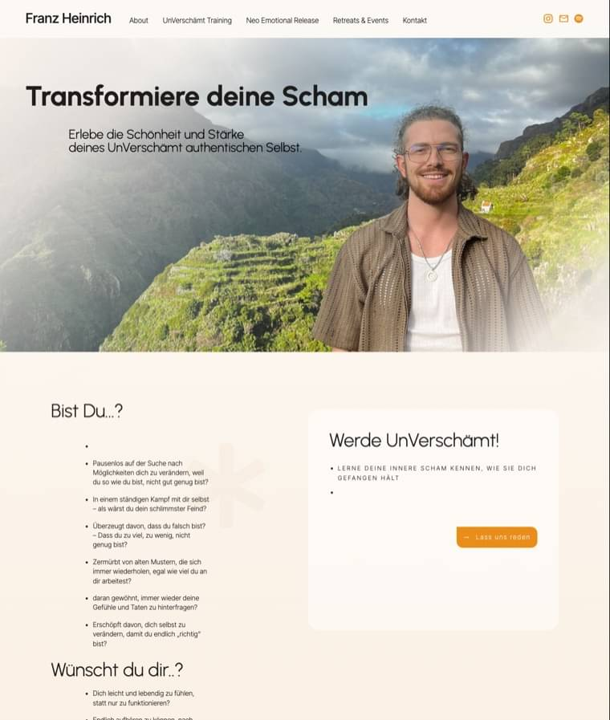
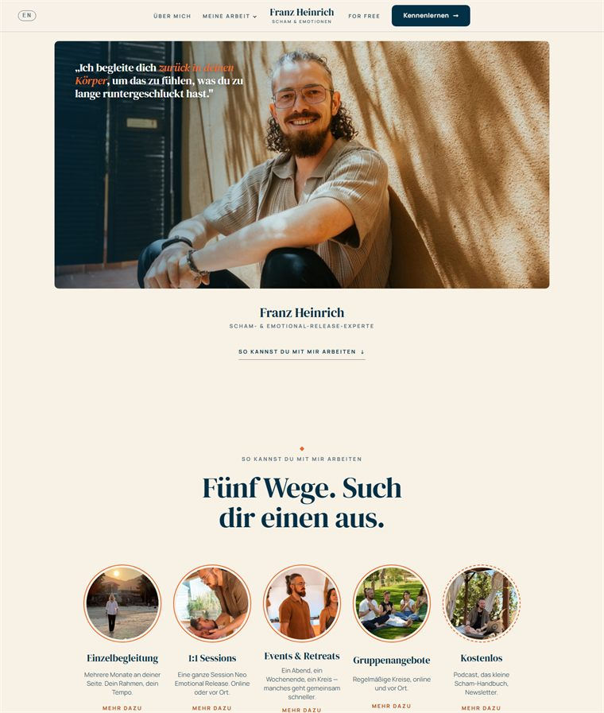
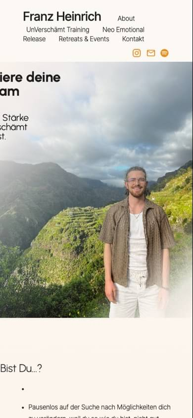
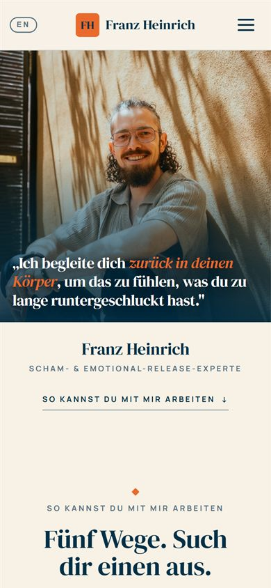

Franz, die Struktur steht.
Vier Seiten, ein Ziel: die 1:1 Session. Blau und Orange tragen wieder, die Texte sind kurz, Stimmen und Kostenloses tauchen immer wieder dazwischen auf. Jetzt bist du dran mit Bildern, Stimmen und deinen Worten.
Deine Seite ansehenVier Seiten. Mehr braucht es nicht.
Startseite
Bild und Zitat, Kennst du das?, Dein Weg, Stimmen, Über mich, For free, Kennenlernen.
Ansehen → Die wichtigste1:1 Session
Fakten mit Preis, Ablauf, für dich / nicht für dich, Stimmen, Fragen.
Ansehen → Darf lang seinÜber mich
Hard Facts, deine Geschichte in drei Kapiteln, Zone of Genius, Random Facts.
Ansehen → NeuFor free
Oben alles Kostenlose, darunter getrennt die kleinen Angebote.
Ansehen →Was wir besprochen haben — und was daraus wurde.
| Besprochen | Jetzt auf der Seite |
|---|---|
| Blau und Orange statt Beige | Navy ist jetzt der Grund der ganzen Seite, Orange trägt Knöpfe, Zahlen und ein Stimmen-Band. Das hellere Blau kommt bei „For free“ vor. Beige gibt es nur noch als eine helle Fläche bei „Über mich“ und für lange Lesetexte. |
| Oben: Bild mit Zitat, später Video | Dein Foto mit dem Zitat in weißer Schrift, darunter Name und Titel. Sobald dein Video da ist, tritt es an die Stelle des Fotos — der Platz ist vorbereitet. Du suchst das Kopfbild noch aus. |
| Danach direkt „Kennst du das?“ | Sitzt jetzt als zweiter Bildschirm: erst der Schmerz, dann die Lösung. |
| „Dein Weg“ statt „Meine Arbeit“ — die 1:1 Session als Einstieg | Die Session steht groß mit Bild und Knopf. Darunter, bewusst kleiner: „Und danach, wenn es passt“ — Einzelbegleitung und Retreat. Beide ohne eigene Unterseite und ohne Details, wie besprochen. |
| Nur ein Call to Action | Überall derselbe Knopf: Kennenlernen. Er führt zum Kennenlern-Call. WhatsApp und E-Mail-Adresse sind raus, das Formular bleibt als „Lieber schreiben?“. |
| Stimmen immer wieder dazwischen, ausgewählt statt Google-Block | Drei auf der Startseite, drei auf der Session-Seite, dazu Über mich und For free. Es sind einzelne Sätze von Luca, Nicole, Denise und Lukas von deiner bisherigen Seite, ohne Sterne, weil keine Bewertungsplattform dahintersteht. Bitte prüfen, ob das für die vier so passt. Der Google-Block ist raus. |
| Video-Testimonial auf die Session-Seite | Der Platz ist dort, nicht mehr auf der Startseite. |
| Kostenloses immer wieder einbauen | Auf der Startseite zweimal: eine Zeile „Lieber erst mal zuhören?“ und der Bereich „For free“ mit drei Kostproben. Dazu auf jeder Unterseite ein Hinweis. Instagram und Spotify laufen darüber, nicht als Feed. |
| Eigene Seite für Freebies und kleine Angebote, getrennt | for-free.html: oben alles Kostenlose, darunter in einer eigenen Fläche Morgen-Ritual, psychosomatische Toolbox und Vortrag. Was es noch nicht gibt, ist gestrichelt und heißt „bald“. |
| Über mich wie bei Lydia | Überschrift mit deinem Satz „Ich bin mein bestes Testimonial“, Hard Facts, deine Geschichte in drei Kapiteln mit Bildern, „In den letzten Jahren“, Zone of Genius, Stimmen, Random Facts, dein Zitat. |
| Verspieltes raus, weniger Text | Laufband, die fünf Kreise, Newsletter, Gruppenangebote und die Begleitungs-Seite sind raus. Die Startseite ist deutlich kürzer. |
| Preis der Session | Auf der Session-Seite steht 300 €, so wie im Call genannt. Bitte bestätigen oder korrigieren — und sag uns, ob das der Endpreis inklusive Umsatzsteuer ist. |
Zieh den Griff nach links und rechts.


Bisher Neu

Das Gerüst braucht jetzt Futter.
In dieser Reihenfolge, so wie im Call besprochen. Zwei bis drei Stunden pro Woche reichen.
- Bilder. Im Drive-Ordner auswählen und benennen: Kopfbild, Session, Über mich (drei Kapitel), Retreat.
- Stimmen. Die besten aus Google und von deiner Liste, gern mit Foto. Und ein Video-Testimonial für die Session-Seite.
- Kostenloses. Link zur Tanz-Playlist, deine erste geführte Meditation oder Breathwork, weitere Podcast-Gespräche.
- Texte. Ganz am Schluss und in deiner Sprache: Start, Session-Seite, Über mich. Danach übersetzen wir, du korrigierst.
- Drei Angaben. Preis der Session bestätigen, Kalender-Link für den Kennenlern-Call, deine Orte.
- Später. Preise und Links für die kleinen Angebote, dein Kopf-Video, Impressum-Angaben, AGB prüfen lassen.
Ziel: live, bevor du nach Koh Phangan fliegst.
Feedback-Runde Ende Oktober?
Such dir einen Termin aus — rund 30 Minuten, dann gehen wir zusammen durch.
Termin aussuchenÖffnet unseren Kalender in einem neuen Tab. Diese Seite bleibt komplett cookiefrei.